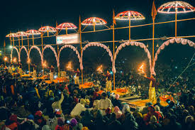

Varanasi is one of the world's oldest continuously inhabited cities and a spiritual hub in India, revered as the abode of Lord Shiva and a place where dying individuals can attain salvation. Situated on the banks of the sacred River Ganga, it serves as a vital pilgrimage destination for Hindus, though it is also considered sacred by Buddhists, Jains, and Sikhs. The city is a center of spiritual practices, culture, and learning, known for its numerous temples and traditional practices.
Varanasi